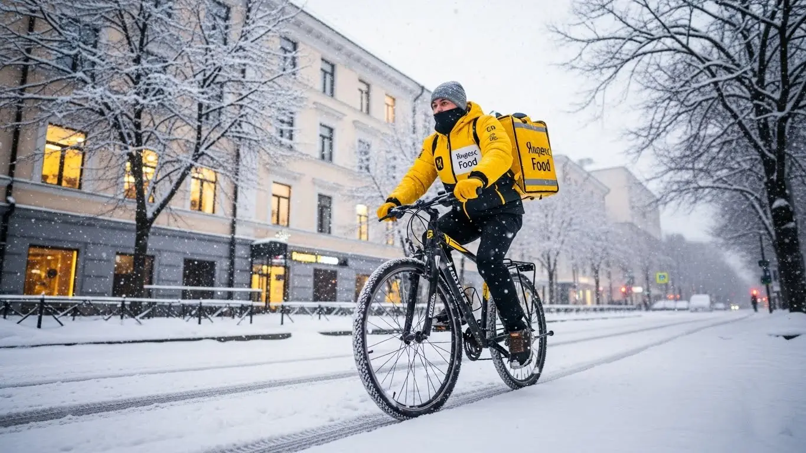
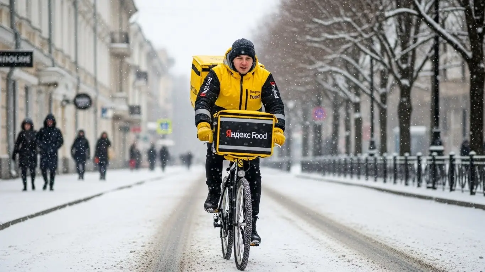
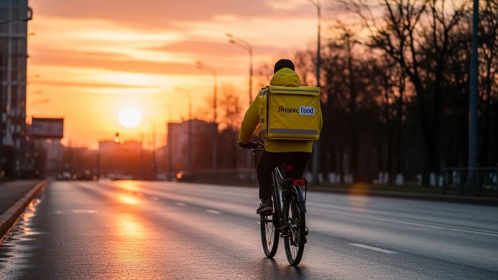

Работа курьером Яндекс Еда в Иркутске 2025-2026: доход и условия
- Работа курьером Яндекс Еды в Иркутске: для кого эта вакансия и что вы получите
- Сколько вы будете зарабатывать курьером в Иркутске: калькулятор дохода и разбор выплат
- Реальный заработок курьера в Иркутске: смены и месячный доход
- График работы и форматы занятости
- Требования к кандидату и документы
- Самозанятость, налоги и юридическая чистота
- Пошаговое оформление и первый выход на линию в Иркутске
- Пешком, на вело или на авто: что выгоднее в Иркутске
- Районы, маршруты и «топовые» зоны заказов в Иркутске
- Безопасность, страховка, штрафы и оплата простоя
- Плюсы и возможные минусы работы курьером в Иркутске
- Реальные истории и отзывы курьеров из Иркутска
- FAQ: Ответы на частые вопросы о работе курьером в Иркутске
- Короткие ответы на главные вопросы
- Итоги и твой следующий шаг в Иркутске
Все города
Думаешь, работа курьером Яндекс Еда в Иркутске — это просто сел на велик и поехал рубить бабло? А потом стоишь в мертвой пробке на плотине, убиваешь подвеску на наших дорогах или мерзнешь в -30°, доставляя остывший заказ в какой-нибудь отдаленный район? Я сам прошел через все это и знаю, чем отличается рекламная картинка от реальной работы курьером Яндекс Еды и Яндекс Лавки в нашем городе. И поверь, разница огромная.
Без понимания местной «кухни» ты рискуешь слить первый же месяц впустую. Потому что твой чистый доход — это не красивая цифра в приложении. Это заработок минус бензин (или калории), налоги, амортизация и время, потерянное впустую. Большинство новичков в Иркутске не учитывают это, гоняются за дешевыми заказами через весь город, не понимают систему приоритета и в итоге разочаровываются, так и не выйдя на нормальный заработок. Чтобы заранее оценить все условия, посмотреть калькулятор дохода и подать заявку, изучите официальную страницу: работа курьером Яндекс Еда в Иркутске.
В этом гиде я разложу все по полочкам. Мы честно посчитаем, сколько РЕАЛЬНО можно заработать пешком, на велосипеде или авто с учетом иркутских реалий. Разберём, какие районы (от центра до Ново-Ленино и Солнечного) самые прибыльные, а куда лучше не соваться в час пик. Я покажу на примерах, как наша сибирская погода влияет на заказы и доход, за что на самом деле штрафуют и как этого избежать.
Меня зовут Алексей. Я не теоретик из интернета — я сам несколько лет откатал с желтой сумкой по Иркутску, а сейчас у меня свой небольшой таксопарк-партнер. Так что никакой рекламной шелухи и обещаний золотых гор не будет. Только честный опыт, цифры и советы, которые помогут тебе не наступать на мои грабли. Готов? Тогда давай по порядку, начнем с самого главного — с денег.
Но прежде чем нырять в детали, давай быстро пробежимся по ключевым моментам этой статьи в формате короткого гида.
Экспресс-навигация: ключевые вопросы о работе курьером в Иркутске
В этой статье ты ТОЧНО узнаешь:
- Сколько на самом деле можно заработать в Иркутске за смену, и что выгоднее — авто, вело или свои двои?
- В каких районах и в какое время суток лучше всего работать, чтобы не стоять без заказов?
- Как устроена система оплаты: из чего складывается доход, что такое «оплата простоя» и как работают коэффициенты?
- За что реально могут оштрафовать или понизить рейтинг, и как этого избежать?
- Какие документы нужны для старта и как за 10 минут оформить самозанятость, чтобы получать ежедневные выплаты?
А если тебе некогда читать всю статью — переходи сразу к заключению, где ты найдёшь короткие ответы на все эти вопросы и указания, в каких разделах искать подробности.
А вот наглядная инфографика, чтобы сразу оценить основные цифры.
Работа курьером в Иркутске: ключевые цифры
Работа курьером Яндекс Еды в Иркутске: для кого эта вакансия и что вы получите
Давай начистоту: работа курьером в Яндекс Еде — это не про лёгкие деньги, но это честный и понятный способ заработка, доступный практически каждому. В Иркутске, с его пробками, рельефом и суровой зимой, у этой подработки есть своя специфика. Но если подойти к делу с умом, можно обеспечить себе стабильный доход, который зависит только от тебя.
Эта вакансия — настоящий конструктор. Ты сам через приложение «Яндекс Про» решаешь, когда и сколько работать, какой транспорт использовать и в каком районе города выполнять заказы. Это возможность быть самому себе хозяином, получая ежедневные выплаты на карту. Здесь нет сложного входа в профессию: заполнил анкету, прошёл короткий инструктаж — и уже через несколько часов можешь получить первый заработок.

Кому подойдёт эта работа в Иркутске
Эта вакансия универсальна, и на линии постоянно встречаются самые разные люди. В первую очередь, это отличный вариант для студентов иркутских вузов — ИГУ, «Нархоза», «Политеха». Стать курьером можно с 18 лет, а свободный график легко подстроить под расписание пар: вышел на пару часов после учёбы, выполнил несколько заказов в центре и заработал на свои расходы.
Во-вторых, это идеальная подработка для тех, у кого уже есть основная занятость. Например, ты работаешь в офисе, а вечером или в выходные хочешь увеличить доход. Просто включаешь приложение и берёшь заказы, когда удобно.
Это также хороший старт для людей без опыта: здесь не требуют диплом или резюме, важны только твоя ответственность и желание работать. И конечно, это стабильный вариант для водителей, которые хотят использовать свой автомобиль для заработка, не связываясь с перевозкой пассажиров.
Главные преимущества для жителей районов Свердловский, Октябрьский, Правобережный
Главный плюс, который многие недооценивают, — возможность работать рядом с домом. Не нужно каждый день тратить час-полтора на дорогу до офиса и обратно через пробки на плотине ГЭС или Глазковском мосту. Ты можешь выбрать зону доставки в своём районе и начинать смену, едва выйдя из подъезда.
Например, живя в Свердловском районе, в микрорайонах Университетский или Первомайский, можно доставлять заказы из местных кафе и магазинов, не выезжая в центр. То же самое касается жителей Октябрьского района — в районе Байкальской или Лисихи всегда есть спрос. А если ты из Правобережного, то весь исторический центр с его сотнями ресторанов — твоя рабочая зона. В приложении «Яндекс Про» ты сам выбираешь удобный слот на карте и работаешь в его пределах.
Краткое обещание по доходу и условиям
Если говорить о деньгах, то в Иркутске при частичной занятости (3–4 часа в день) доход курьера составляет 1000–1800 рублей за смену. Если же рассматривать это как основную работу и выходить на линию на 8–10 часов, то зарплата автокурьера может достигать 4000–5500 рублей в день. В месяц при полной занятости реально выходить на 70 000–90 000 рублей и больше, особенно в пиковые сезоны.
Ключевые условия работы просты и прозрачны. Во-первых, свободный график — ты сам составляешь расписание. Во-вторых, ежедневные выплаты — деньги приходят на карту сразу, не нужно ждать конца месяца. В-третьих, начать можно без опыта, а всему научат на коротком онлайн-инструктаже. Для старта нужен только смартфон, статус самозанятого и желание работать. Фирменную термосумку или термокороб обычно выдают партнёры сервиса.
Сколько вы будете зарабатывать курьером в Иркутске: калькулятор дохода и разбор выплат
Вопрос «сколько я буду зарабатывать?» — главный, и это нормально. Фиксированной зарплаты здесь нет, твой доход напрямую зависит от количества и сложности заказов. Но система абсолютно прозрачна, и в приложении «Яндекс Про» ты всегда видишь, из чего складывается итоговая сумма.
Система мотивирует работать в часы пик и в зонах с высоким спросом. Чем активнее город заказывает еду, тем выше коэффициенты, а значит, и твой заработок. Поначалу цифры могут показаться сложными, но уже через пару дней на линии ты начнёшь интуитивно понимать, где и когда выгоднее всего находиться.
Из чего складывается доход курьера
Твой заработок в Яндекс Еде — это не просто плата за один заказ. Он состоит из нескольких частей, которые суммируются:
- Оплата за заказ. Базовая стоимость за то, что ты забираешь посылку в точке А и привозишь в точку Б.
- Доплата за расстояние. Чем дальше ехать или идти до клиента, тем больше денег ты получишь. Система рассчитывает оптимальный маршрут и доплачивает за каждый километр.
- Повышающие коэффициенты. В часы пик (обед, ужин), в плохую погоду или в районах с высоким спросом на карте в «Яндекс Про» появляются «фиолетовые зоны». Работая в них, ты получаешь больше денег за тот же заказ.
- Бонусы. Сервис часто предлагает персональные цели: например, выполни 10 заказов за день и получи дополнительно 500 рублей. Это отличный способ увеличить итоговый доход.
- Чаевые. Все чаевые от клиентов через приложение поступают на твой счёт в полном объёме.
- Оплата простоя. Важное преимущество. Если ты выбрал плановый слот, а заказов временно нет, сервис всё равно начисляет минимальную гарантированную оплату за это время. Ты не останешься с нулём, если спрос на время упал.
Как пользоваться калькулятором дохода
Чтобы прикинуть свой потенциальный заработок ещё до начала работы, на сайте есть специальный калькулятор. Пользоваться им просто: выбери свой город — Иркутск, а затем укажи, как планируешь доставлять — как пеший курьер, велокурьер или курьер на автомобиле.
Далее выставь предполагаемый график: сколько часов в день и сколько дней в неделю готов работать. На основе этих данных и средней статистики по городу калькулятор покажет примерный диапазон твоего дневного и месячного дохода. Это не точная цифра до копейки, а ориентир, который помогает трезво оценить, на какой заработок можно рассчитывать.
Прикинь свой возможный доход в Иркутске
8 часов
5 дней
* Расчёт основан на средней ставке для Иркутска. Реальный доход зависит от спроса, бонусов, чаевых и типа доставки.
Чтобы увидеть актуальные условия, требования и заполнить анкету, загляни на официальную страницу: работа курьером Яндекс Еда в твоём городе. Там же найдёшь подробный FAQ и сможешь задать вопросы.
Примеры расчёта для пешего, вело- и авто‑курьера в Иркутске
Давай рассмотрим несколько реальных сценариев для Иркутска, чтобы было понятнее.
- Пеший курьер-студент. Работает по 4 часа вечером в будни в центре, в районе улиц Карла Маркса и Литвинова. Здесь много кафе и заказы на короткие расстояния. За смену он выполняет 6–8 доставок, и с учётом бонусов и чаевых его доход составляет примерно 1200–1600 рублей за вечер.
- Велокурьер на подработке. Выходит на 8-часовые смены в выходные, катается между спальными районами — например, из Октябрьского в Свердловский. На велосипеде он быстрее пешего и успевает выполнить 15–20 заказов за день. Его заработок за смену может составить 2800–3500 рублей.
- Водитель-курьер на полной занятости. Работает 5 дней в неделю по 8–10 часов. Он берёт заказы по всему городу, включая дальние доставки в Ново-Ленино или Зелёный берег, а также крупные — из гипермаркетов. В плохую погоду, когда коэффициенты максимальны, его доход за смену может достигать 4500–6000 рублей. В месяц такой курьер стабильно зарабатывает 80 000–100 000 рублей.

Реальный заработок курьера в Иркутске: смены и месячный доход
Перейдём к конкретике, без рекламных обещаний. Цифры, которые я назову, — это реальный расклад по Иркутску, основанный на статистике водителей в нашем парке и личном опыте. Твой заработок в Яндекс Еде или Доставке напрямую зависит от того, как ты работаешь: на своих двоих, на велосипеде или на машине, и сколько времени готов этому посвятить.
Если рассматриваешь доставку как подработку, выходя на 2–4 часа в день, например, после основной работы или учёбы, то расклад такой. Пеший курьер в центре, в районе 130-го квартала или на Карла Маркса, за такой короткий слот сделает 800–1500 рублей. Велокурьер, который может быстро перемещаться по Октябрьскому или Свердловскому району, заработает за то же время 1000–1800 рублей. Автокурьер за 3–4 часа вечернего пика может привезти 1500–2500 рублей, но отсюда ещё нужно вычесть бензин.
При полной занятости, когда ты на линии по 8–10 часов, цифры заработка совсем другие. Пеший курьер, работая в плотной застройке, может рассчитывать на 45 000–70 000 рублей в месяц. Велосипедист за счёт скорости и маневренности выходит на 55 000–85 000 рублей. Самые высокие доходы в доставке у автокурьеров: 80 000–120 000 рублей в месяц — это не предел, особенно в холодный сезон. Но помни, для машины это «грязный» доход, из которого нужно вычитать расходы на топливо и обслуживание.
Сравнение среднего дохода в Иркутске по типам занятости
| Тип курьера | Подработка (2–4 часа/день) | Полная занятость (8–10 часов/день) | Месячный доход (полная занятость) |
|---|---|---|---|
| Пеший | 800 – 1 500 ₽ | 2 000 – 3 500 ₽ | 45 000 – 70 000 ₽ |
| Велокурьер | 1 000 – 1 800 ₽ | 2 500 – 4 000 ₽ | 55 000 – 85 000 ₽ |
| Автокурьер | 1 500 – 2 500 ₽ (до вычета расходов) | 4 000 – 6 000 ₽ (до вычета расходов) | 80 000 – 120 000 ₽ (до вычета расходов) |
Вот тебе живой пример. Один из наших водителей-курьеров решил поработать в сильный снегопад в январе, когда город встал. Он не лез в самый центр, а взял зону в Правобережном районе. Пока пешие и велокурьеры сидели по домам, он спокойно развозил заказы Яндекс Доставки, которые сыпались один за другим с огромными коэффициентами. За 8 часов смены он сделал около 7 500 рублей — почти вдвое больше, чем в обычный день.
В общем, твой заработок курьером в Иркутске — это не фиксированная зарплата, а результат твоей стратегии. Он зависит от транспорта, выбранного района и готовности работать тогда, когда спрос максимальный. Главный совет: не бойся плохой погоды и вечерних смен — именно в это время делаются самые большие деньги.
Как район, время суток и погода влияют на доход
Запомни три кита, на которых держится твой доход: место, время и погода. В Иркутске это работает безотказно. Нельзя просто выйти на линию в первом попавшемся месте в два часа дня и ждать золотых гор. Нужно понимать, где и когда концентрируются заказы. Самые «жирные» зоны — это, конечно, центр города (улицы Ленина, Карла Маркса), 130-й квартал и крупные ТРЦ вроде «Модного квартала» или «Сильвер Молла». Здесь всегда много ресторанов и, соответственно, заказов из Яндекс Еды.
Время суток решает не меньше. Есть два главных пика: обеденный (примерно с 12:00 до 14:00) и вечерний (с 18:00 до 21:00). В это время люди массово заказывают еду в офисы и домой. Пятница и суббота вечером — это святое время, когда коэффициенты в приложении «Яндекс Про» взлетают, окрашивая карту в фиолетовый цвет. Работать в эти часы — значит зарабатывать в полтора-два раза больше, чем в дневное затишье.
Ну и погода — наш иркутский козырь. Как только начинается сильный дождь, снегопад или ударяет мороз под -25°C, происходит две вещи: количество желающих заказывать доставку резко растёт, а число курьеров на линии — падает. Спрос превышает предложение, и система Яндекса автоматически включает высокие повышающие коэффициенты. Плюс, люди в такую погоду охотнее оставляют чаевые, потому что ценят твой труд. Для автокурьера иркутская зима — это сезон высокого заработка в доставке.
Советы по увеличению заработка от опытных курьеров
Чтобы не просто работать, а именно зарабатывать, нужно подходить к делу с головой. Вот несколько проверенных советов, которые помогут увеличить доход без лишних переработок. Во-первых, планируй свои смены. Заходи в «Яндекс Про» и бронируй плановые слоты на самое выгодное время — вечера и выходные. Их разбирают быстро, так что делай это заранее. Плановые слоты часто идут с дополнительными бонусами и гарантией минимального дохода в час.
Во-вторых, правильно выбирай зону. Не стоит гоняться за высоким коэффициентом через весь город с одного берега Ангары на другой. Потратишь больше времени и бензина. Лучше выбери один густонаселённый район, например, Октябрьский, где много и ресторанов, и жилых домов, и работай в нём. Так ты быстрее изучишь все дворы и короткие пути, что увеличит твою скорость и, как следствие, количество выполненных заказов в час.
В-третьих, будь гибким. Если ты на машине, это не значит, что нужно отказываться от коротких заказов. Иногда выгоднее припарковаться у крупного фуд-корта в «Сильвер Молле» и выполнить пару пеших доставок еды в соседние дома, чем ехать за одним заказом от Яндекс Доставки в Ново-Ленино. Сочетай форматы: используй машину для дальних поездок между районами, а в точках с высокой плотностью заказов работай как пеший. Это и есть умный подход, который отличает профессионала.

График работы и форматы занятости
Гибкий график — это главное преимущество работы курьером в Яндексе. Ты сам решаешь, когда выходить на линию. Это идеальный вариант для тех, кому нужны дополнительные деньги, но нет возможности работать полный день. У меня есть много примеров, как ребята из Иркутска успешно совмещают доставку с другими делами.
Подработка после учёбы или основной работы
Например, есть студент из ИГУ, живёт в микрорайоне Университетский. Он выходит на смены на велосипеде после пар, обычно с 18:00 до 22:00. Катается по своему и соседним районам, развозит ужины. В субботу берёт слот на 6–8 часов. В итоге, не напрягаясь, он добавляет к стипендии 20 000–25 000 рублей в месяц, которых хватает на его личные расходы.
Другой пример — мужчина, который работает в офисе с 9 до 18. У него есть машина. Каждый вечер по пути домой он включает приложение «Яндекс Про», берёт 2–3 заказа из центра в сторону своего дома в Свердловском районе. В пятницу и выходные, если есть настроение и нужны деньги, может поработать 4–5 часов в пиковое время. Такая стратегия приносит ему дополнительный доход в 30 000–40 000 рублей в месяц, которые он тратит на семью или хобби. Это реальная возможность заставить своё время и автомобиль работать на тебя.
Полная занятость: как выглядит типичный день курьера
Если ты решил сделать доставку своей основной работой в Яндексе, твой день будет строиться вокруг пиков спроса. Это уже не хаотичные выходы, а полноценная рабочая смена, которую ты планируешь сам. Вот как выглядит типичный день опытного автокурьера в Иркутске, который работает на результат.
Он выходит на линию около 10–11 утра, когда город проснулся и начинаются первые заказы из Яндекс Маркета и утренние доставки документов. К 12:00 он уже перемещается в зону с высокой концентрацией кафе и бизнес-центров, например, в центр или в район аэропорта, чтобы быть готовым к обеденному пику. С 12:00 до 15:00 — самое активное время, заказы идут практически без перерыва.
После 15:00 наступает небольшое затишье. Это время можно использовать для обеда, заправки или выполнения нескольких дальних, но дорогих заказов. А уже с 17:30 нужно снова быть в «боевой готовности». Начинается вечерний час пик, который длится до 21:00–22:00. В это время основные маршруты — из ресторанов в спальные районы: Солнечный, Юбилейный, Ново-Ленино. После 22:00 спрос падает, и можно либо завершать смену, либо выполнить ещё пару заказов из круглосуточных заведений и аптек.
Как планировать слоты и выходы через приложение «Яндекс Про»
Приложение «Яндекс Про» — твой главный рабочий инструмент. Именно через него ты управляешь своим графиком и доходом. В приложении есть два основных режима работы: свободные выходы и плановые слоты. Свободный выход — это когда ты просто нажимаешь кнопку «На линию» в любое удобное время и начинаешь получать заказы. Это максимум гибкости, но доход может быть нестабильным.
Плановые слоты — это заранее забронированные отрезки времени (от 2 до 12 часов) в определённой зоне города. Ты видишь доступные слоты на несколько дней вперёд и можешь выбрать самые выгодные — вечерние, утренние, в выходные. Их главное преимущество в том, что на них часто действуют повышенные минимальные ставки оплаты в час или другие бонусы. Система Яндекса видит, что ты надёжный партнёр, и может давать тебе больше заказов.
Критически важно относиться к плановым слотам ответственно. Если ты забронировал слот, нужно выйти на линию вовремя и в указанной геолокации. Регулярные опоздания или пропуски смен негативно влияют на твой рейтинг и уровень приоритета при распределении заказов. Поэтому, если хочешь зарабатывать стабильно и много, привыкай планировать свою рабочую неделю через «Яндекс Про» — это дисциплинирует и напрямую влияет на твой кошелёк.
Вот тебе случай из практики. Пришёл к нам парень, только начинал. Первую неделю выходил на линию как попало, в основном днём у себя в Ново-Ленино, и жаловался, что заказов мало. Я ему показал, как в Яндекс Про работает планировщик слотов. Он начал бронировать себе вечерние смены в Октябрьском районе. Уже через неделю его дневной доход вырос в три раза, потому что он стал работать не когда удобно, а когда выгодно.
В итоге, график в Яндекс Еде действительно свободный, но эта свобода требует ответственности. Используй «Яндекс Про» для умного планирования, выбирай пиковые часы и выгодные районы, и тогда твой доход будет стабильным. Это и есть главный секрет успешной работы курьером в Яндексе.
Требования к кандидату и документы
Многие думают, что для старта в доставке нужна кипа бумаг и особые навыки. На деле всё гораздо проще: эта работа не требует опыта, тебе не понадобится диплом или резюме на три страницы. Главное — быть ответственным, пунктуальным и готовым двигаться. Давай по порядку разберём, что именно от тебя потребуется.
Возраст, гражданство и базовые условия
Начну с главного — возрастных ограничений. Чтобы стать курьером в Яндекс Еде, тебе должно быть полных 18 лет. Никаких исключений здесь нет, так как работа связана с материальной ответственностью и финансовыми операциями. По гражданству условия тоже чёткие: принимают граждан России и стран Евразийского экономического союза (ЕАЭС), куда входят Беларусь, Казахстан, Армения и Кыргызстан.
Что касается физической формы, то сверхъестественного ничего не требуется. Если ты пеший курьер, будь готов проходить за смену 10–15 километров, в том числе с термосумкой за плечами. Для велокурьера важна выносливость, особенно если работаешь в районах Иркутска с перепадами высот. Курьеру на своем автомобиле проще физически, но нужна концентрация и умение ориентироваться в городском трафике, особенно в часы пик на улицах Ленина или Карла Маркса.
Какие документы нужны для работы курьером
Список документов минимальный, и собрать их можно за один день. Тебе не придётся бегать по инстанциям и стоять в очередях. Вот что нужно подготовить заранее, чтобы процесс оформления прошёл максимально быстро:
- Паспорт. Основной документ, удостоверяющий твою личность и гражданство. Нужен будет его скан или качественное фото для регистрации.
- ИНН (Идентификационный номер налогоплательщика). Он необходим для оформления самозанятости. Если ты не помнишь свой номер, его легко найти за пару минут на официальном сайте ФНС по паспортным данным.
- Банковская карта. Нужна личная дебетовая карта любого российского банка, оформленная на твоё имя. Именно на неё будут приходить твои ежедневные выплаты.
- Медицинская книжка. Она не обязательна для всех заказов, но я настоятельно рекомендую её оформить. Без медкнижки тебе будут недоступны заказы из многих ресторанов и продуктовых магазинов, а это — большая часть потенциального дохода. Сделать её в Иркутске можно в любом аккредитованном медцентре, это вложение быстро окупится.
Можно ли работать с 16 лет и какие есть альтернативы
Часто спрашивают, можно ли устроиться в Яндекс Еду с 16 или 17 лет. Отвечаю честно: нет, нельзя. Сервис заключает договор только с совершеннолетними кандидатами. Это связано с полной материальной ответственностью за заказы и денежные средства, а также с законодательными ограничениями на труд несовершеннолетних.
Если тебе ещё нет 18, но хочется заработать, не стоит отчаиваться. В Иркутске есть другие варианты подработки для подростков. Можно поискать вакансии промоутера, расклейщика объявлений или помощника в небольших местных кафе, которые иногда нанимают своих курьеров на доставку в пределах одного квартала. Это будет хорошим опытом и поможет накопить на что-то нужное, а как исполнится 18 — добро пожаловать в доставку.
Из практики: был случай со студентом из ИРНИТУ. Он думал, что оформление — это долго и сложно. Но мы за 5 минут нашли его ИНН на сайте налоговой, сфотографировали паспорт, и он сразу подал заявку. Медкнижку парень решил сделать после первой недели, когда убедился, что доход стабильный. В итоге от желания стать курьером до первого заработка у него прошло меньше суток.
Как видишь, условия работы курьером просты: пакет документов минимален, а главные требования — это совершеннолетие и гражданство РФ или ЕАЭС. Проверь ИНН и подготовь реквизиты карты заранее, чтобы ускорить регистрацию.
Самозанятость, налоги и юридическая чистота
Многих новичков пугают слова «самозанятость» и «налоги». Кажется, что это сложно и связано с бумажной волокитой. На самом деле, всё наоборот.
Статус самозанятого (плательщика налога на профессиональный доход — НПД) специально создан, чтобы упростить жизнь тем, кто работает на себя, включая курьеров. Это самый простой и легальный способ сотрудничества с Яндексом, который обеспечивает официальный доход.
Почему курьеры Яндекс Еды работают как самозанятые
Работа через самозанятость — это не прихоть компании, а самый удобный и прозрачный формат для обеих сторон. Во-первых, это полностью официально. Твой доход легален, ты можешь при необходимости взять справку о доходах для банка, например, для получения кредита. Никаких «серых» схем и конвертов.
Во-вторых, это даёт тебе свободу. Ты не сотрудник в штате, а независимый партнёр сервиса. Статус самозанятого юридически обеспечивает тебе свободный график — ты сам выбираешь, когда и сколько работать.
В-третьих, это избавляет от бухгалтерии. Не нужно вести отчётность, заполнять декларации и ездить в налоговую. Весь процесс автоматизирован через приложение Яндекс Про и «Мой налог».
Как за 10 минут оформить самозанятость через «Мой налог»
Регистрация статуса самозанятого занимает меньше времени, чем перерыв на кофе. Всё делается онлайн, никуда ходить не нужно. Вот простая пошаговая инструкция:
- Скачай на свой смартфон официальное приложение ФНС «Мой налог» (доступно в Google Play и App Store).
- Открой приложение и выбери способ регистрации. Самый быстрый — «По паспорту РФ».
- Отсканируй камерой телефона главный разворот паспорта. Приложение само распознает все данные. Проверь, чтобы всё было верно.
- Подтверди свою личность, сделав селфи прямо в приложении.
- Выбери регион ведения деятельности — Иркутская область.
- Подтверди регистрацию. Готово! Теперь ты официально самозанятый.
Весь процесс интуитивно понятен и занимает от силы 10 минут. Также зарегистрироваться можно через приложение Яндекс Про при подключении к сервису или через личный кабинет некоторых банков — они сами передадут все данные в налоговую.
Сколько и как платить налоги
Это самый приятный момент. Налоговая ставка для самозанятых — одна из самых низких в стране. Ты платишь 6% с доходов, полученных от юридических лиц (то есть от Яндекса) и 4% с доходов от физических лиц (например, если клиент перевёл чаевые тебе напрямую на карту).
Процесс уплаты налога полностью автоматизирован. Яндекс Про сам передаёт информацию о твоём заработке в налоговую. В приложении «Мой налог» ты видишь все поступления. До 12-го числа каждого месяца, следующего за отчётным, налоговая присылает тебе квитанцию с итоговой суммой налога. Оплатить её нужно до 28-го числа. Сделать это можно в один клик прямо в приложении, привязав банковскую карту. Никаких расчётов вручную, никаких деклараций. Это проще, чем оплатить мобильную связь.
Один мой знакомый водитель-курьер раньше работал через парки-партнеры, теряя на комиссиях. Перейдя на прямую работу с Яндексом как самозанятый, он был в шоке. Его отзыв: «Я зарегистрировался за 10 минут, пока ждал заказ у ТРЦ „Сильвер Молл“. Первый налог оплатил одной кнопкой. Теперь я точно знаю, сколько заработал и сколько отдал государству, и сплю спокойно».
Итог простой: оформление самозанятости — это не страшно, а выгодно и удобно. Это твой способ работать легально, не отвлекаясь на бюрократию. Не ищи обходных путей — это самый прямой и честный путь к стабильному доходу и ежедневным выплатам.
Пошаговое оформление и первый выход на линию в Иркутске
Многие думают, что устроиться курьером — это долго и муторно, с кучей бумажек и собеседований. На деле всё проще и быстрее, чем заказать пиццу. Весь процесс отлажен и проходит в основном онлайн, так что тебе не придётся никуда ездить до момента, когда нужно будет забрать экипировку.
Весь путь от заполнения анкеты до первого заработка можно пройти буквально за один день, если не тянуть. Система специально сделана так, чтобы убрать лишнюю бюрократию и позволить человеку быстро начать получать доход. Давай по шагам разберём, как стать курьером в Иркутске.
Шаг 1–2: анкета и онлайн‑обучение
Всё начинается с простой анкеты на сайте. Никаких вопросов про карьерные амбиции или кем ты видишь себя через пять лет. Нужны базовые данные: ФИО, номер телефона, гражданство и фото паспорта с ИНН для оформления. Чаще всего для работы с сервисом требуется статус самозанятого — его можно оформить онлайн за 10–15 минут. После этого тебе предложат скачать приложение «Яндекс Про» — это твой главный рабочий инструмент.
Как только данные пройдут быструю проверку, откроется доступ к короткому онлайн-обучению. Это не лекции в университете, а несколько коротких видео и тестов. Тебе расскажут об основах: как правильно общаться с клиентами и сотрудниками ресторанов, как обращаться с термосумкой, чтобы еда не остыла, и что делать в нестандартных ситуациях. Тесты простые, на внимательность. Прошёл их — считай, полдела сделано.
Шаг 3: получение сумки и доступа к заказам в Иркутске
После успешного обучения система предложит тебе получить термокороб (его ещё называют термосумка) и, возможно, другую экипировку вроде куртки или дождевика, в зависимости от сезона. В Иркутске это можно сделать несколькими способами: забрать в офисе партнёра-агрегатора, в специальном пункте выдачи или даже заказать доставку на дом.
Не нужно самому искать адреса и обзванивать офисы. В приложении «Яндекс Про» появятся все доступные варианты с адресами и графиком работы. Выбираешь самый удобный для себя, приезжаешь, забираешь сумку, и твой аккаунт полностью активируют. С этого момента ты становишься полноценным курьером и можешь видеть доступные заказы на карте города.
Шаг 4: первый слот и первый доход
Как только аккаунт активен, можно выходить на линию. Ты открываешь «Яндекс Про», смотришь на карту Иркутска и выбираешь временной интервал для работы — это называется «слот». Слоты бывают разной длительности, от пары часов до целого дня. Для первого раза советую взять короткий слот на 3–4 часа и выбрать район, который ты хорошо знаешь, например, свой собственный. Так будет спокойнее.
Выбираешь слот, нажимаешь кнопку «На линию» — и всё, ты в системе. Приложение начнёт предлагать тебе заказы поблизости. Принимаешь первый, идёшь в ресторан, забираешь пакет, отвозишь клиенту. Деньги за доставку и возможные чаевые сразу же отобразятся на твоём балансе в приложении. Это и есть те самые ежедневные выплаты: заработал — получил.
Расскажу про одного моего парня из таксопарка. Он решил попробовать себя в доставке. Утром в понедельник заполнил анкету, пока пил кофе, прошёл обучение. Днём ему пришло уведомление, что можно забирать сумку в офисе на улице Декабрьских Событий. Он съездил, забрал. Вечером того же дня взял слот на 4 часа в своём Свердловском районе. Спокойно развёз 7 заказов и заработал первые 1200 рублей. Говорит, сам не ожидал, что всё так быстро получится.
В итоге, весь процесс устроен максимально логично и быстро. Главное — не откладывать и последовательно проходить шаги в приложении. Мой совет: перед заполнением анкеты сразу подготовь фото паспорта и ИНН — так проверка пройдёт быстрее, и ты сможешь выйти на линию уже сегодня.

Пешком, на вело или на авто: что выгоднее в Иркутске
Выбор транспорта — это не просто вопрос удобства, это твоя стратегия заработка. От того, как ты передвигаешься, зависит, какие заказы тебе будут доступны, сколько ты сможешь выполнить за смену и, соответственно, какой доход получишь. В Иркутске со своим рельефом, пробками и расстояниями между районами каждый формат имеет свои сильные и слабые стороны.
Нужно трезво оценить свои возможности и цели. Если нужна лёгкая подработка на пару часов в день и ты живёшь в центре — пеший вариант идеален. Если ты вынослив и хочешь зарабатывать больше, покрывая большие расстояния без трат на бензин — велосипед твой выбор. А если у тебя есть машина и ты готов работать по всему городу, то автодоставка принесёт максимальный доход.
Пеший курьер: для центра и плотной застройки в Иркутске
Центр Иркутска — идеальная территория для пешего курьера. Улицы Карла Маркса, Ленина, Урицкого, а также весь 130-й квартал — это сплошная концентрация кафе, ресторанов и офисов. Заказов здесь всегда много, а расстояния между точками А (ресторан) и Б (клиент) часто не превышают километра. На машине здесь делать нечего: вечные пробки, проблемы с парковкой. Пешком ты обойдёшь любой затор.
Работая пешком в центре, ты экономишь на транспорте и постоянно находишься в зоне высокого спроса. Заказы идут один за другим, практически без простоя. Да, ты не сможешь взять заказ на другой конец города, но за счёт плотности и количества коротких доставок твой часовой заработок может быть очень даже приличным. Это отличный вариант для студентов или тех, кто живёт в центре и ищет подработку без опыта.
Велокурьер: быстрые доставки между спальными районами
Велосипед даёт тебе скорость и манёвренность. Ты уже не привязан к одному кварталу, как пеший курьер, но всё ещё не зависишь от пробок, как водитель. Этот формат отлично подходит для работы в крупных спальных районах Иркутска, таких как Солнечный или Университетский. Здесь расстояния между домами и торговыми точками уже больше, пешком не набегаешься, а на машине можно застрять во дворах.
На велосипеде ты можешь быстро перемещаться между жилыми комплексами, доставляя заказы из местных пиццерий, суши-баров и магазинов. Плюс, это реальный «оплачиваемый фитнес»: поддерживаешь себя в форме и получаешь за это деньги. Велокурьеры часто зарабатывают больше пеших за счёт того, что могут выполнить больше заказов в час на средние дистанции.
Водитель‑курьер: заказы по всему городу и пригороду Шелехов, Маркова
Автомобиль — это твой пропуск к самым дорогим и дальним заказам. Водитель-курьер не ограничен одним районом и может работать по всему Иркутску: от Ново-Ленино до Зелёного Берега. Именно на авто приходят заказы из гипермаркетов в рамках сервиса Яндекс Доставка: это могут быть несколько больших пакетов с продуктами, которые пешком или на велосипеде просто не унести.
Особенно выгодно работать на машине в плохую погоду — в дождь или сибирский мороз спрос на доставку резко возрастает, а вместе с ним и коэффициенты. Также автомобиль незаменим для работы с пригородами, например, для доставок в Маркова или Шелехов. Да, есть расходы на бензин и амортизацию, но они с лихвой перекрываются стоимостью дальних заказов и возможностью работать в любые погодные условия.
Сравнение форматов доставки в Иркутске
| Параметр | Пеший курьер | Велокурьер | Водитель-курьер |
|---|---|---|---|
| Лучшие зоны работы | Центр (ул. Карла Маркса, 130-й квартал) | Спальные районы (Солнечный, Университетский) | Весь город, дальние районы (Ново-Ленино), пригороды (Маркова, Шелехов) |
| Тип заказов | Короткие, из ресторанов и кафе | Средние дистанции, еда, небольшие посылки | Дальние, крупные, из гипермаркетов, в любую погоду |
| Скорость | Низкая | Средняя | Высокая (вне пробок) |
| Расходы | Минимальные (удобная обувь) | Обслуживание велосипеда | Бензин, амортизация, страховка |
| Потенциальный доход | Средний | Выше среднего | Высокий |
У меня в таксопарке есть водитель, который раньше работал только в такси. В дневные часы, когда заказов мало, он простаивал. Я посоветовал ему подключиться к доставке. Теперь днём он берёт крупные заказы из гипермаркетов вроде «Ленты» или METRO и развозит их по частному сектору и пригородам. Его средний дневной доход вырос примерно на 25-30%, потому что он перестал терять время в ожидании пассажиров.
В итоге, нет однозначно «лучшего» способа доставки — есть тот, который подходит именно тебе и условиям Иркутска. Проанализируй, где ты живёшь, какой у тебя транспорт и сколько времени ты готов уделять работе. Мой совет: если есть возможность, пробуй комбинировать. Например, в хорошую погоду работать на велосипеде в своём районе, а в дождь или снегопад выезжать на машине на дальние заказы с повышенным коэффициентом. Гибкость — ключ к максимальному заработку.
Районы, маршруты и «топовые» зоны заказов в Иркутске
Знать город — это главное правило курьера, который хочет хорошо зарабатывать. Можно просто кататься по Иркутску, выполняя случайные заказы, а можно работать с умом, зная, где и когда тебя ждут самые выгодные заявки. Разница в доходе будет ощутимой. Я за годы работы изучил все «рыбные места» и готов поделиться, где в нашем городе крутятся деньги.
Где больше всего заказов: ТРЦ, бизнес‑центры и туристические места
Самый стабильный поток заказов, особенно в обед и по вечерам, идёт из точек притяжения людей. Во-первых, это крупные торгово-развлекательные центры. В Иркутске это, прежде всего, «Модный квартал» и «Сильвер Молл». Там сосредоточены фуд-корты и рестораны, откуда люди постоянно заказывают еду. В часы пик (с 12:00 до 14:00 и с 18:00 до 21:00) здесь на карте в «Яндекс Про» почти всегда «фиолетовые» зоны — это значит, действуют повышающие коэффициенты.
Во-вторых, это деловой центр города. Улицы Карла Маркса, Ленина, Сухэ-Батора — это сплошные офисы и бизнес-центры. Днём отсюда летят заказы на ланчи, а вечером — ужины для тех, кто задержался на работе. И, конечно, туристические зоны. Наш знаменитый 130-й квартал — это золотая жила. Там десятки ресторанов, и спрос есть почти всегда, особенно в выходные.
Работа в своём районе: примеры для популярных жилых кварталов
Многие думают, что для хорошего заработка нужно обязательно ехать в центр. Это не всегда так. Можно отлично работать и в своём спальном районе, если подойти к делу грамотно. Главное преимущество — ты экономишь время и топливо, а заказы выполняешь быстрее, потому что знаешь каждый двор.
Возьмём, к примеру, Свердловский район, особенно микрорайоны Университетский и Первомайский. Здесь много многоэтажек, а значит, много потенциальных клиентов. При этом хватает и своих точек притяжения: пиццерии, суши-бары, магазины вроде «Слаты». То же самое касается Октябрьского района — микрорайоны Солнечный и Байкальский. Заказы здесь могут быть не такими дорогими, как из центрального ресторана, но ты берёшь их количеством. Пока курьер на автомобиле стоит в пробке на Глазковском мосту, ты как пеший или велокурьер уже успеваешь сделать 2–3 доставки по соседним улицам.
Как выбирать зоны и слоты в «Яндекс Про», чтобы не мотаться впустую
Приложение «Яндекс Про» — твой главный инструмент для планирования. Основное, на что нужно смотреть, — это карта спроса. Зоны на карте подсвечиваются разными цветами: чем ярче цвет (от жёлтого к фиолетовому), тем выше там спрос и, соответственно, оплата за заказ. Никогда не начинай смену, не посмотрев на эту карту.
Планируй свои слоты заранее и выбирай те зоны, где исторически высокий спрос в это время. Например, брать утренний слот в спальном районе в будний день — не лучшая идея. А вот вечерний слот там же или дневной в центре города — совсем другое дело. Кроме того, учись просчитывать маршруты. Если тебе прилетает заказ на другой конец города, прикинь, сможешь ли ты оттуда получить следующий или придётся возвращаться пустым. Иногда выгоднее пропустить один дальний заказ, чтобы остаться в зоне высокого спроса.
Из практики: один мой водитель-курьер поначалу гонялся за каждым заказом по всему Иркутску — от Ново-Ленино до Зелёного Берега. В итоге он много жёг бензина, а чистый доход был средний. Я посоветовал ему сменить тактику: с 11 до 15 часов работать строго в районе улиц Советская и Декабрьских Событий, собирая офисные обеды, а с 18 до 22 — перемещаться в район «Модного квартала» и 130-го. Его пробег за смену сократился почти на треть, а заработок вырос на 20–25 %.
В общем, ключ к успеху — не в хаотичной езде, а в анализе и планировании. Изучай карту спроса в «Яндекс Про», понимай ритм города и находи те связки, которые приносят максимальный доход при минимальных затратах.
Безопасность, страховка, штрафы и оплата простоя
Работа курьера, как и любая другая, связана с определёнными правилами и рисками. Ты постоянно в движении, общаешься с людьми, отвечаешь за сохранность заказа. Важно понимать, что в Яндексе ты не брошен на произвол судьбы. Существует целая система, которая защищает твой доход и здоровье.
Бесплатная страховка на сменах и что она покрывает
Это один из самых важных моментов, о котором многие новички даже не знают. Когда ты находишься на активном заказе на плановом слоте, твоя жизнь и здоровье застрахованы. Это бесплатная программа от партнёров Яндекса, которая действует автоматически. Сумма покрытия может достигать 2 миллионов рублей.
Что это значит на практике? Если, не дай бог, ты попал в ДТП, упал с велосипеда и получил травму, или поскользнулся зимой на льду и что-то сломал — страховка поможет покрыть расходы на лечение. Чтобы она сработала, нужно сразу же сообщить о случившемся в службу поддержки через приложение «Яндекс Про» и следовать их инструкциям. Это реальная подушка безопасности.
Правила безопасности на дороге и при доставке
Банальные вещи, но именно они спасают от неприятностей. Для пешего курьера главное — быть внимательным: переходить дорогу только по переходу, в тёмное время суток носить одежду со светоотражающими элементами. Для велокурьера — обязателен шлем, фонари и знание ПДД. Для водителя-курьера правила стандартные: не превышать скорость, не отвлекаться на телефон, парковаться так, чтобы не мешать другим.
Особое внимание — погоде в Иркутске. Зимой у нас бывают сильные морозы и гололёд. Одевайся теплее, закладывай больше времени на доставку. Летом в жару всегда имей при себе воду. Что касается самого заказа — обращайся с ним бережно. Термокороб или термосумка должны быть всегда чистыми и плотно закрытыми.
Какие бывают штрафы и как их избежать
Давай честно: система штрафов или, как это правильно называется, депремирования, существует. Но её цель — не отобрать у тебя деньги, а поддерживать высокий уровень сервиса. Санкции применяются только за серьёзные и систематические нарушения. Например, если ты регулярно опаздываешь на забронированные слоты, это снижает твой рейтинг. Могут наказать за грубость клиенту, за испорченный по твоей вине заказ.
Избежать этого проще простого: будь вежлив, аккуратен и пунктуален. Если понимаешь, что опаздываешь из-за пробки, — сообщи в поддержку. Если с заказом что-то не так — тоже сразу пиши в чат поддержки. Большинство проблем можно решить, если вовремя о них сообщить. Штрафуют в основном тех, кто пытается схитрить или относится к работе наплевательски.
Что такое оплата простоя и как она защищает ваш доход
Это, пожалуй, одно из ключевых преимуществ работы с Яндексом. Оплата простоя — это гарантия того, что твоё время будет оплачено, даже если заказов временно нет. Работает это так: ты выходишь на запланированный слот, находишься в указанной зоне, но заказы по какой-то причине не поступают. В этом случае система начисляет тебе компенсацию за время ожидания.
Это защищает твой доход от ситуаций, когда в городе низкий спрос. Ты не будешь сидеть час или два бесплатно в ожидании чуда. Эта функция выгодно отличает сервис от многих конкурентов, где действует простое правило: нет заказов — нет денег.
Был у меня случай с парнем-студентом, который только начал работать. Взял слот в среду днём, а погода была отличная, и заказов было мало. Он уже начал паниковать. За 4 часа выполнил всего 4 заказа. Но в конце смены увидел в отчёте дополнительную сумму — сработала оплата простоя. В итоге его заработок за час получился вполне приемлемым.
Итак, главное — понимать условия работы, соблюдать правила и не бояться трудностей. Система безопасности, страховка и финансовые гарантии созданы для того, чтобы ты мог спокойно делать свою работу.

Плюсы и возможные минусы работы курьером в Иркутске
Давай начистоту, любая работа — это не только деньги, но и свои особенности. Курьерская доставка в Иркутске не исключение. Здесь есть как жирные плюсы, так и моменты, к которым нужно быть готовым. Важно взвесить всё заранее, чтобы потом не было разочарований.
Это не офисная рутина, но и не лёгкая прогулка. Это динамичная работа, где твой заработок напрямую зависит от тебя. Например, у меня был водитель, который после основной работы выходил на линию на 3–4 часа вечерами. Он чётко знал, что в это время в Октябрьском и Правобережном районах пик заказов. За эти несколько часов его чистый доход составлял 1500–2000 рублей. Он понимал минусы — вечерние пробки, усталость, — но плюсы для него перевешивали.
В общем, работа курьером — это баланс свободы и ответственности. Если ты готов к движению и ценишь возможность самому управлять своим временем и доходом, то, скорее всего, вы сработаетесь.
Сильные стороны работы курьером в Иркутске
Начнём с того, что привлекает большинство. Во-первых, это свободный график. Ты сам решаешь, когда и сколько работать. Можно выходить на пару часов в качестве подработки после учёбы в ИГУ, а можно катать полные смены. Ты сам себе начальник.
Во-вторых, ежедневные выплаты. Заработал — получил. Деньги приходят на карту каждый день. Кроме того, оформление идёт официально как самозанятый. Это значит, что у тебя легальный доход, с которого платится небольшой налог, и всё чисто перед государством.
И, конечно, важные моменты — поддержка и страховка. Ты не остаёшься один на один с проблемами на линии. А страховка жизни и здоровья на время смены даёт уверенность, что в случае чего ты не останешься без помощи. Плюс, ты можешь работать рядом с домом, выбрав для доставок свой район, будь то Свердловский или Ново-Ленино.
С какими сложностями чаще всего сталкиваются курьеры
Теперь о другой стороне медали. Один из главных минусов — физическая нагрузка. Если ты пеший или велокурьер, будь готов много ходить или крутить педали. Иркутск — город не самый равнинный, подъёмы в районе Академгородка или на Синюшиной горе дадут о себе знать.
Вторая сложность — погода. Сибирский климат — это серьёзное испытание. Зимой — морозы и снегопады, летом — жара или дожди. Работать в таких условиях некомфортно, но есть и плюс: в плохую погоду заказов всегда больше, а коэффициенты выше. Главное — правильно экипироваться.
Третий момент — общение с разными клиентами. Большинство людей адекватны, но иногда попадаются и недовольные. Важно сохранять спокойствие и быть вежливым. Если ситуация выходит из-под контроля, сразу обращайся в поддержку. И последнее — возможные простои. Бывают часы, когда заказов мало. В это время лучше переместиться в зону повышенного спроса, которую видно на карте в приложении.
Кому такая работа подходит, а кому лучше поискать другой формат
Давай определимся, для кого эта работа станет хорошим выбором. Она идеально подходит, если ты активный человек и не любишь сидеть на одном месте. Это отличный вариант для студентов, например, из ИРНИТУ или БГУ, которым нужно совмещать работу с учёбой. Также это хороший выбор для тех, кому нужна подработка или быстрые деньги здесь и сейчас.
Такие условия работы подойдут самостоятельным людям, которые умеют планировать своё время. Если ты интроверт и предпочитаешь слушать музыку в наушниках, а не участвовать в офисных сплетнях, тебе тоже понравится. Водители, которые хотят, чтобы их машина приносила дополнительный доход, тоже найдут здесь свою выгоду.
С другой стороны, если ты ищешь максимальной стабильности с фиксированной зарплатой, курьерская работа может показаться слишком непредсказуемой. Если ты не переносишь физические нагрузки, плохую погоду и общение с незнакомыми людьми, лучше поискать что-то другое.
Реальные истории и отзывы курьеров из Иркутска
Теория — это хорошо, но лучше всего о работе говорят реальные люди. Я собрал несколько коротких историй от иркутских курьеров, чтобы ты увидел картину с разных сторон.
История студента Иркутского государственного университета, который совмещает учёбу и доставку
«Меня зовут Кирилл, я учусь на истфаке в ИГУ. Живу в общежитии в Свердловском районе, здесь же в основном и работаю на велосипеде. График у меня простой: выхожу на 3–4 часа по вечерам после пар, примерно с 18:00 до 22:00. В выходные могу отработать смену часов на 6–8. Для меня это идеальный формат: и деньги есть, и учёбе не мешает. В среднем мой заработок за неделю — 6–8 тысяч рублей. Этого дохода мне с головой хватает на личные расходы».
Опыт автокурьера, который выходит в пиковые часы
«Я работаю инженером, график стандартный. Но кредит на машину сам себя не выплатит, поэтому решил попробовать себя в доставке. Выхожу на своей машине только в самое выгодное время: обеденный перерыв с 12 до 14 и вечерний пик с 18 до 21. В это время всегда горят повышенные коэффициенты. Беру заказы из центра, например, из „Модного квартала“, и развожу по спальным районам — Солнечный, Юбилейный. Мой доход за эти несколько часов в день сравним с тем, сколько зарабатывает пеший курьер за полную смену».
Мнение вело‑курьера о работе в центре и спальниках
«Я Аня, работаю велокурьером уже полгода. Попробовала разные районы Иркутска. В центре, в районе 130-го квартала и улицы Карла Маркса, заказы в Яндекс Еде сыпятся один за другим, расстояния короткие. Но минус — толпы людей и пробки. В спальных районах, например, в Первомайском или Университетском, всё спокойнее. Заказов поменьше, но и дистанции побольше. Мне нравится чередовать: в будни вечером работаю в центре, а в выходные выбираю спальники, чтобы работать в более расслабленном темпе».
FAQ: Ответы на частые вопросы о работе курьером в Иркутске
Собрал здесь ответы на то, о чём чаще всего спрашивают новички. Без воды, только по делу.
- Нужно ли оформлять самозанятость и как платить налоги?
Да, обязательно. Работа курьером в Яндекс Еде — это официальная деятельность. Статус самозанятого (НПД) является обязательным условием. Оформление занимает 10 минут через приложение «Мой налог». Налог платится только с полученного дохода — 6% от Яндекса. Это честно и прозрачно. - Какой телефон и интернет нужны для работы курьером?
Твой ключевой инструмент — это смартфон на базе Android, потому что рабочее приложение «Яндекс Про» на iPhone не работает. Нужен стабильный мобильный интернет и хорошо работающий GPS. Мой совет: сразу купи хороший пауэрбанк, потому что приложение быстро съедает батарею. - Что будет, если в смену мало заказов — как работает оплата простоя?
Это одно из главных преимуществ. Если ты вышел на запланированный слот, а заказов мало, тебе всё равно начисляется минимальная гарантированная оплата за час. Это твоя страховка от «пустых» часов. Твоё время оплачивается. - Есть ли в Яндекс Еде штрафы и за что их могут применить?
Система штрафов есть, но это скорее система ответственности. Деньги просто так никто не списывает. Санкции применяются за серьёзные нарушения: грубость клиенту, порча заказа, регулярные опоздания на слоты. Если работаешь нормально, по стандартам сервиса, то со штрафами не столкнёшься. - Нужно ли покупать термосумку и сколько она стоит?
Нет, покупать не обязательно. Брендированный термокороб или термосумку выдают партнёры сервиса, часто бесплатно или в аренду за символическую плату. Иногда можно использовать и свою сумку, если она подходит по размерам и сохраняет температуру, но лучше уточнить этот момент при подключении. - Что делать, если я попал в ДТП или повредил заказ?
Главное — без паники. Сначала убедись, что ты в безопасности. Сразу после этого свяжись со службой поддержки через чат в приложении Яндекс Про и подробно опиши ситуацию. Они дадут чёткие инструкции, что делать дальше. Помни, что на плановых слотах действует страховка жизни и здоровья, поэтому важно сообщить о происшествии как можно скорее. - Сколько реально можно заработать курьером в Иркутске?
Реальный заработок в Иркутске при полной занятости для водителя-курьера может доходить до 4000–5000 рублей за смену, для велокурьера — 2500–3500 рублей. Пеший курьер в центре города сделает 2000–3000 рублей. Главное отличие от конкурентов — это экосистема Яндекса с большим потоком заказов, оплата простоя и бесплатная страховка. - Можно ли работать без опыта и что будет на обучении?
Да, это идеальный вариант для старта без опыта. Перед выходом на линию ты проходишь короткое онлайн-обучение. Это понятные видеоролики и небольшой тест в приложении. Тебе расскажут, как пользоваться программой, как общаться с клиентами и что делать в нестандартных ситуациях. - Берут ли с 16–17 лет и какие есть ограничения по возрасту?
Здесь всё строго. На работу курьером в Яндекс Еду берут только с 18 лет. Никаких исключений нет. Это связано с материальной ответственностью и необходимостью оформлять самозанятость.
Короткие ответы на главные вопросы
Собрал здесь шпаргалку с самыми важными выводами из статьи. Если что-то забудешь — заглядывай сюда.
Быстрая шпаргалка: ответы на ключевые вопросы
Короткие ответы на ключевые вопросы
Сколько на самом деле можно заработать в Иркутске за смену, и что выгоднее — авто, вело или свои двои?
Реальный доход за смену в Иркутске: автокурьер — 4000–6000 ₽, велокурьер — 2500–4000 ₽, пеший — 2000–3500 ₽. Центр города идеален для пеших, спальные районы — для вело, а авто выгодно для дальних заказов и работы в плохую погоду.
→ Подробнее читай в разделе «Пешком, на вело или на авто: что выгоднее в Иркутске».В каких районах и в какое время суток лучше всего работать, чтобы не стоять без заказов?
Самый высокий спрос в центре (ул. Карла Маркса, 130-й квартал) и у ТРЦ «Модный квартал» и «Сильвер Молл». Пиковые часы — обед (12:00–14:00) и вечер (18:00–21:00), а также в плохую погоду, когда действуют максимальные коэффициенты.
→ Подробнее читай в разделе «Районы, маршруты и «топовые» зоны заказов в Иркутске».Как устроена система оплаты: из чего складывается доход, что такое «оплата простоя» и как работают коэффициенты?
Заработок складывается из оплаты за заказ, доплаты за расстояние, бонусов, чаевых и повышающих коэффициентов в «фиолетовых зонах». «Оплата простоя» — это гарантия минимального дохода в час на плановых слотах, даже если заказов временно нет.
→ Подробнее читай в разделе «Сколько вы будете зарабатывать курьером в Иркутске: калькулятор дохода и разбор выплат».За что реально могут оштрафовать или понизить рейтинг, и как этого избежать?
Санкции применяют за серьёзные нарушения: грубость, порчу заказа, регулярные опоздания на забронированные слоты. Чтобы этого избежать, нужно быть вежливым, аккуратным и при возникновении проблем сразу связываться с поддержкой через приложение.
→ Подробнее читай в разделе «Безопасность, страховка, штрафы и оплата простоя».Какие документы нужны для старта и как за 10 минут оформить самозанятость, чтобы получать ежедневные выплаты?
Нужны паспорт, ИНН и банковская карта на ваше имя. Статус самозанятого — обязательное условие, он оформляется за 10 минут онлайн через приложение «Мой налог». Это позволяет работать официально и получать заработок на карту каждый день.
→ Подробнее читай в разделе «Самозанятость, налоги и юридическая чистота».
Для полного понимания темы рекомендую прочитать всю статью — там ты найдёшь примеры, сравнения и дельные советы из практики.
Итоги и твой следующий шаг в Иркутске
Краткие выводы по работе курьером в Иркутске
Если коротко, работа курьером в Яндекс Еде в Иркутске — это реальная возможность зарабатывать от 40 до 100 тысяч рублей в месяц, в зависимости от формата и занятости. Главные козыри — это абсолютно свободный график, который ты строишь сам, и ежедневные выплаты заработка прямо на карту. Условия прозрачные: ты видишь стоимость каждого заказа, а такие вещи, как оплата простоя и страховка, защищают твой доход и здоровье.
На фоне других служб доставки в городе Яндекс выигрывает за счёт огромного потока заказов из разных сервисов и умного приложения, которое реально помогает работать эффективнее. Это не просто подработка, а полноценный инструмент для заработка, доступный каждому.
Как сделать первый шаг уже сегодня
Начать проще, чем кажется. Никакой бюрократии и долгих собеседований. Вот простой план:
- Заполни анкету. Это делается онлайн, займёт не больше 5–10 минут.
- Подготовь документы. Тебе понадобится паспорт, ИНН и реквизиты банковской карты.
- Пройди онлайн-обучение. Посмотришь короткие видео, сдашь простой тест прямо в телефоне.
- Получи термосумку и выбери первый слот. В приложении увидишь, где в Иркутске забрать экипировку. После этого можешь сразу выходить на линию.
Весь процесс от анкеты до первого заработка может занять всего один день. Не нужно ждать недели, чтобы получить первые деньги.